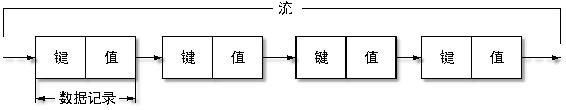
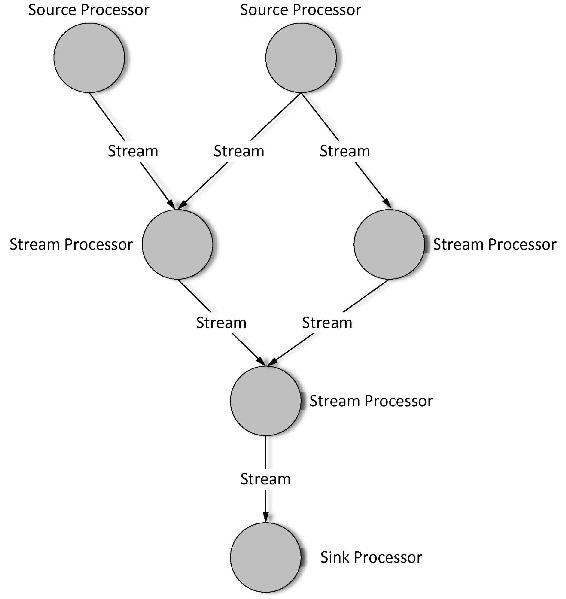
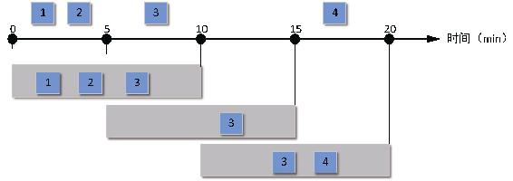
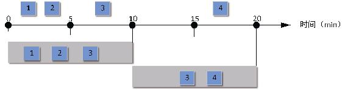
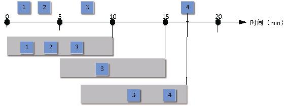

本节将对Kafka Steams相关的概念进行简要介绍，主要包括Kafka Streams对数据流的定义、流处理器和处理拓扑定义、KTable与KStream的概念以及当前版本的Kafka Streams对应的时间窗口类型等。
流（stream）是Kafka Streams提供的最重要的抽象，它代表的是一个无限的、不断更新的数据集。一个流就是由一个有序的、可重放的、支持故障转移的不可变的数据记录（data record）序列，其中每个数据记录被定义为一个键值对。Kafka流的基本结构如图7-1所示。

图7-1 Kafka流基本结构
一个流处理器（stream processor）是处理拓扑中的一个节点，它代表了拓扑中的处理步骤。一个流处理器从它所在的拓扑上游接受数据，通过Kafka Streams提供的流处理的基本方法，如map()、filter()、join()以及聚合等方法，对数据进行处理，然后将处理后的一个或多个输出结果发送给下游流处理器。一个拓扑中的流处理器当中有Source处理器和Sink处理器两个特殊的流处理器。
处理器拓扑（processor topology）是流处理应用程序进行数据处理的计算逻辑。一个处理器拓扑是由流处理器和相连接的流组成的有向无环图，其中流处理器是图的节点，流是图的边。一个典型的Kafka Streams的拓扑结构如图7-2所示。

图7-2 一个典型的Kafka Stream的拓扑结构
Kafka提供了以下两种定义流处理拓扑的API。
时间（time）是流处理中一个比较重要的概念，如开窗操作就是根据时间边界来定义的。流处理定义的通用3种类型的时间如下。
在Kafka 0.10.x版本之后，增加了时间戳类型，每条消息都会被附加一个时间戳，我们可以通过代理级别配置或者主题级别的配置项来设置消息的时间戳类型。例如，通过message. timestamp.type配置来设置时间戳类型是LogAppendTime还是CreateTime，即分别对应处理时间和存储时间。
Kafka Streams通过TimestampExtractor接口给每个数据记录赋一个时间戳，开发者可以根据不同的需要来确定时间戳的实现。每个数据记录赋予时间戳之后就可以对数据进行聚合操作，实现窗口功能，能够方便地解决数据乱序的问题。
一些流处理并不关注状态（state），即对每个消息的处理都是相互独立的，如对消息进行简单的转换操作或者基于某些条件对消息进行筛选操作等。
然而，某些场景我们可能需要保存流处理的中间结果，即流的中间状态。同时保存状态的话可以提供更多复杂的操作，如对流进行join，group和聚合操作等。Kafka Streams DSL提供了很多这样的包含状态的DSL。Kafka Streams提供了一种状态仓库（state store），被流处理应用用来存储和查询状态数据，默认状态存储在本地RocksDB当中，存储路径通过参数state.dir配置，默认路径为/tmp/kafka-streams。Kafka Streams的每个Task使用一个或多个状态仓库，可通过API来访问和存储流处理需要的数据。这种状态仓库可以是持久化的键值对引擎，也可以是内存中的HashMap或其他方便合理的数据结构。
Kafka Streams对本地状态仓库提供了容错和自动恢复，这是由于本地状态本身是通过Kafka进行复制的，所以当一个机器出现故障时，其他机器可以自动恢复本地状态，并且从故障出错点继续处理。
Kafka Stream定义了KStream和KTable两种基本抽象。两者的区别在于，KStream是一个由键值对构成的抽象记录流，每个键值对是一个独立单元，即使相同的Key也不会被覆盖，类似数据库的插入操作；KTable可以理解成一个基于表主键的日志更新流，相同Key的每条记录只保存最新的一条记录，类似数据库基于主键更新。
无论是记录流（用KStream定义）还是更新日志流（用KTable定义），都可以从一个或多个Kafka主题数据源来创建。一个KStream可以与另一个KStream或者KTable进行Join操作，或者聚合成一个KTable，同样，一个KTable也可以转换成一个KStream。KStream和KTable都提供了一系列转换操作，每个转换操作都可以转化为一个KStream或者KTable对象，将这些转换操作连接在一起就构成了一个处理器拓扑。
在一些应用场景对流处理时可能需要把数据记录按时间分组，也就是按时间把流分为多个窗口（window）。窗口是流处理状态转换操作的基本条件，一个窗口相关的操作通常需要存储中间状态，根据窗口的设置旧的状态在窗口中持续时间大于窗口大小之后就会被删除。一个窗口包括窗口大小和滑动步长两个属性。窗口大小是指一条记录在窗口中持续的时间，持续时间超过窗口大小的记录将会被删除。滑动步长指定了一个窗口每次相对于前一个窗口向前移动的距离。滑动步长不得大于窗口大小，如果步长超过了窗口大小，就会导致部分记录不属于任何窗口而不被处理。当前版本的Kafka Streams目前定义了以下3种窗口。

图7-3 窗口大小为10 min、滑动步长为5 min的跳跃窗口

图7-4 窗口大小为10 min的翻转窗口

图7-5 窗口大小为10 min的滑动窗口